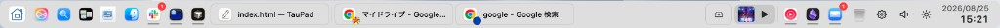

A taskbar that shows what is open
Dock struggles with multiple windows of the same app. TauBar places an icon for each open window. Confirm what is open by its title.
A smarter way to use your Mac
Bring the clarity of a Windows-style taskbar to macOS. See titles, switch instantly, and keep your workspace under control.
Dock struggles with multiple windows of the same app. TauBar places an icon for each open window. Confirm what is open by its title.
Pin apps to the left or right. Separate them by how often you use them.
Launch Siri, Spotlight, Mission Control, and Show Desktop from icons on the taskbar.
Launch apps, search, and open settings from the Start button — without leaving the taskbar.
Check the time and events from the clock, and see your next event in the menu bar — no other app needed.
Adjust volume, brightness, and media playback right from the tray.
Press ⌥Tab to browse every window across every Space, complete with titles and previews.
Park files on the taskbar while you switch apps or Spaces, then drop them where you need them.
A clear border marks the focused window, so you always know which one is active.
TauBar has no usage telemetry. Accessibility is used only to identify and focus windows. Screen Recording is needed only when you choose to show preview thumbnails.

Try every feature free for 10 days. Keep all settings and choose a plan only when you are ready.
$0.99/mo
Flexible, cancel anytime
Best value
$9.99/yr
Two months free every year
$19.99
One payment, yours forever
All plans include the full app and future updates.
Everything you need before giving TauBar a try.
TauBar works alongside macOS. You can keep the Dock, or enable Dock auto-hide for a cleaner taskbar experience.
macOS requires this permission for TauBar to read window titles, focus windows, and restore minimized windows.
Only for preview thumbnails in Window Switcher. Without it, TauBar shows app icons and titles instead.
After 10 days, choose monthly, yearly, or lifetime access. Your preferences remain saved on your Mac.
Each license can be activated on up to two Macs for your personal use.
Yes. The taskbar follows your display setup, and Window Switcher opens on the display under your pointer.